Mise en service et validation
Réception usine et sur site, vérification sur étalons certifiés, plans d'essais de répétabilité et de dérive, prérequis d'installation, procédures écrites avec des critères d'acceptation clairs.
Ingénieur mécanique · Paris
Mise en service, automatisation des essais et robotique. Je fais passer un équipement de la caisse de livraison à un montage validé et automatisé, que d'autres peuvent utiliser en confiance — et je veux continuer sur des systèmes robotisés et motorisés.
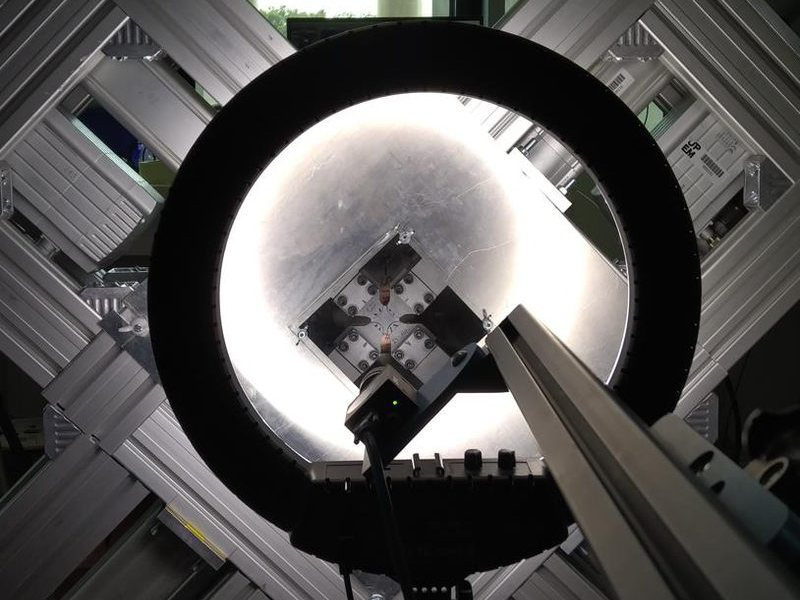
01 — Domaines
Réception usine et sur site, vérification sur étalons certifiés, plans d'essais de répétabilité et de dérive, prérequis d'installation, procédures écrites avec des critères d'acceptation clairs.
Séquences automatisées en Python, LabVIEW et NI TestStand ; variateurs et instruments en Modbus TCP et bus CAN ; acquisition NI ; modes de repli sûrs pour qu'un essai ne finisse jamais mal.
Commande d'axes, capteurs et actionneurs qui travaillent ensemble. D'une séquence de train d'atterrissage de fusée à un banc servo 4 axes, c'est là que je veux progresser : cellules robotisées, plateformes de mouvement, systèmes d'attractions.
02 — Poste actuel
Laboratoire MSME (UMR 8208 CNRS), Université Gustave Eiffel · depuis septembre 2026
Je suis responsable de la plateforme expérimentale du laboratoire : bancs d'acoustique, de perméabilité, de thermique et d'essais mécaniques multiaxiaux. Je mets en service les nouveaux instruments, j'automatise les bancs, j'assure la maintenance préventive et corrective (GMAO) et j'accompagne les chercheurs pendant leurs campagnes d'essais.
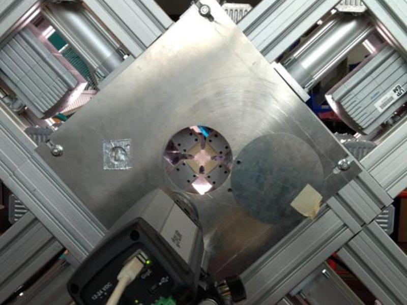
Automatisation · Commande d'axes
Quatre variateurs Festo pilotés en Modbus TCP, mesure d'effort NI et synchronisation caméra pour la corrélation d'images. J'ai écrit les séquences d'essai automatisées (Python, LabVIEW, NI TestStand) avec un mode de repli sûr, puis un cahier de laboratoire et un dossier de livraison pour qu'un nouvel utilisateur puisse lancer le banc seul.
Étape suivante sur ce banc : la motorisation de la fenêtre obturatrice, avec un dossier de prise en main qui sépare ce qui est établi de ce qui reste à mesurer.
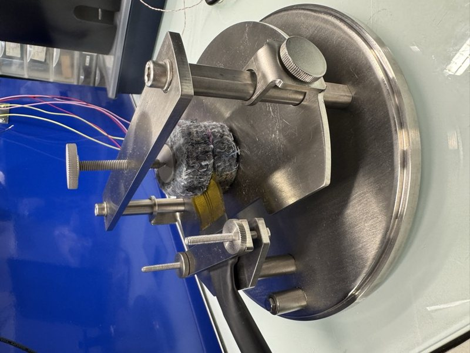
Mise en service · Réception
Mis en service sur le site d'un partenaire industriel : réception constructeur, vérification sur un matériau de référence certifié, puis un plan d'essais couvrant répétabilité, dérive et échantillons de référence avant l'entrée en service.
En parallèle, prérequis d'installation pour une quinzaine d'instruments (triphasé 400 V, air comprimé 8 bar, eau de refroidissement, charge au sol de 2 t, sécurité incendie) et comparaison de fournisseurs en France, en Suisse et au Royaume-Uni (17 à 100 k€), présentée au comité de pilotage.
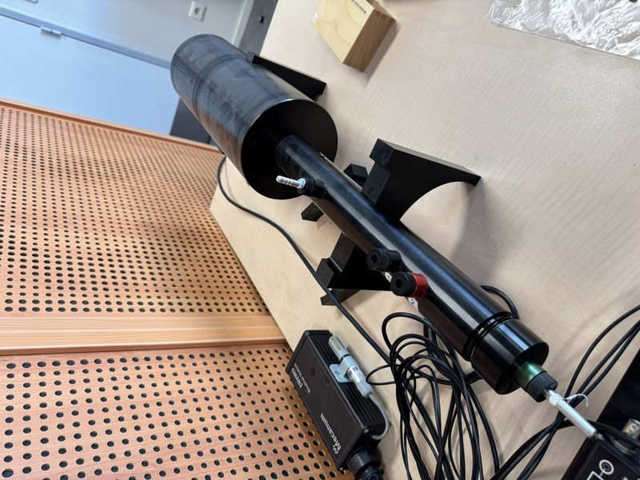
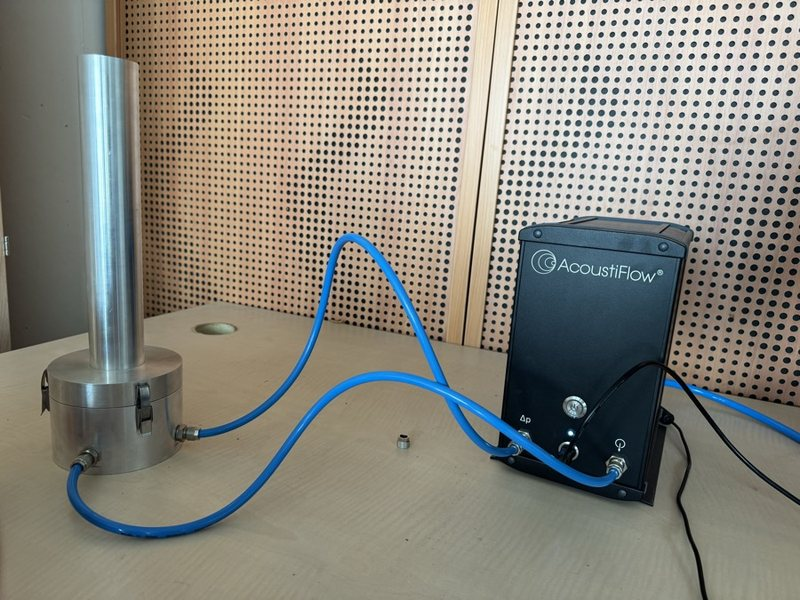
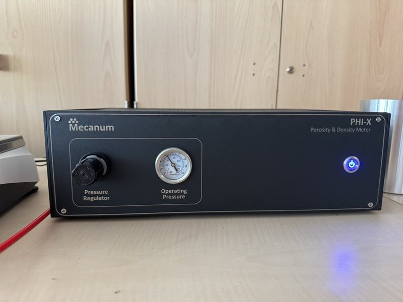
Procédures · Qualité
Quatre procédures rédigées à partir des normes et d'essais réels sur les bancs : tube d'impédance (ISO 10534-2), résistivité au passage de l'air (ISO 9053-1), porosité ouverte et conductivité thermique par source plane transitoire (ISO 22007-2). Chacune couvre la méthode, les critères d'acceptation, les contrôles qualité et le dépannage, pour que les résultats restent comparables quel que soit l'opérateur.
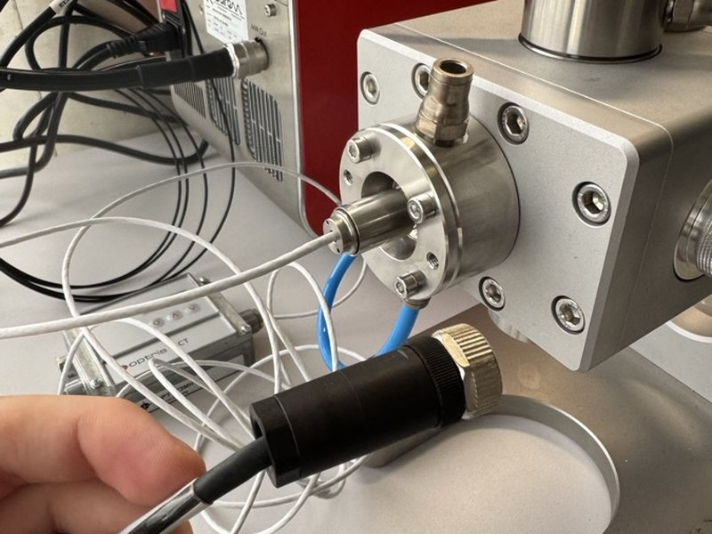
Revue avant démarrage · Communication industrielle
Revue technique d'un banc SAIREM MicroChem (0–200 W état solide, 2,45 GHz) avant sa mise en route : inventaire du matériel, documentation, logiciel de pilotage et sa liaison Modbus RTU / RS485, plus un guide débutant pour l'équipe.
03 — Recherche
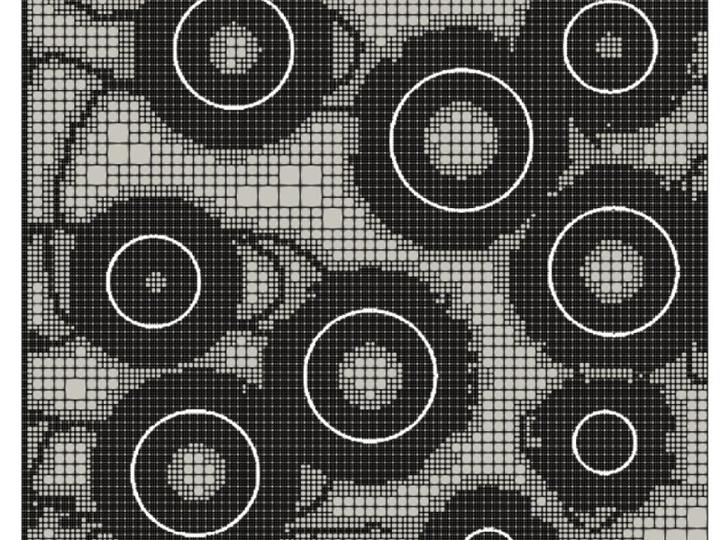
Journal of Computational Physics, 2026 · doi:10.1016/j.jcp.2026.115533
Navier–Stokes sur maillages quadtree adaptatifs, interface par level-set et condition de Stefan pour suivre la précipitation et la dissolution dans un milieu poreux : comment les grains grossissent et fusionnent, et comment la perméabilité et la tortuosité évoluent avec les nombres de Péclet, Damköhler et Reynolds. Travail de stage de fin de master à l'University of California, Santa Barbara.
04 — Projets antérieurs
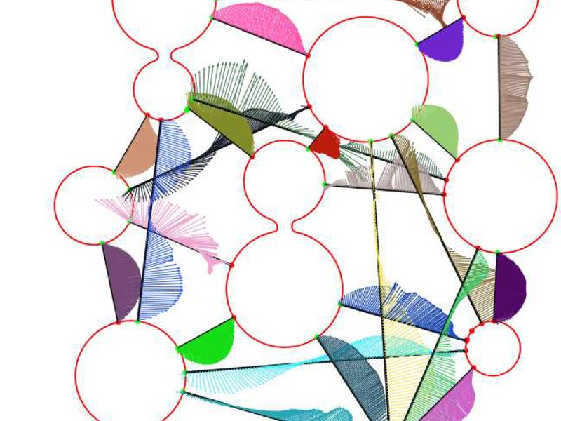
2024 · UC Santa Barbara, États-Unis
Modèle validé sur des données expérimentales, traitement automatisé en Python et C/C++. Six mois dans l'équipe du Pr F. Gibou, à l'origine de l'article ci-dessus.
2023–2024 · Top Aéro, Sorbonne / Arts et Métiers
Jambes rétractables conçues sous SolidWorks, séquence de déploiement et asservissement de la descente programmés.
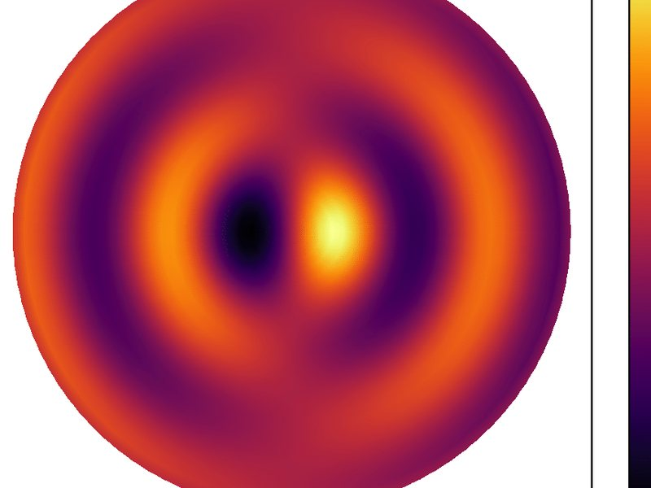
2023 · Institut d'Alembert, Sorbonne
Solveur BEM en Python validé sur des cas analytiques et comparé à Abaqus ; méthodologie de validation et documentation. Rapport →
2023–2024 · Projet personnel
Analyse statique et dynamique d'une poutre chargée sous Abaqus, comparée aux solutions analytiques ; CAO et post-traitement.
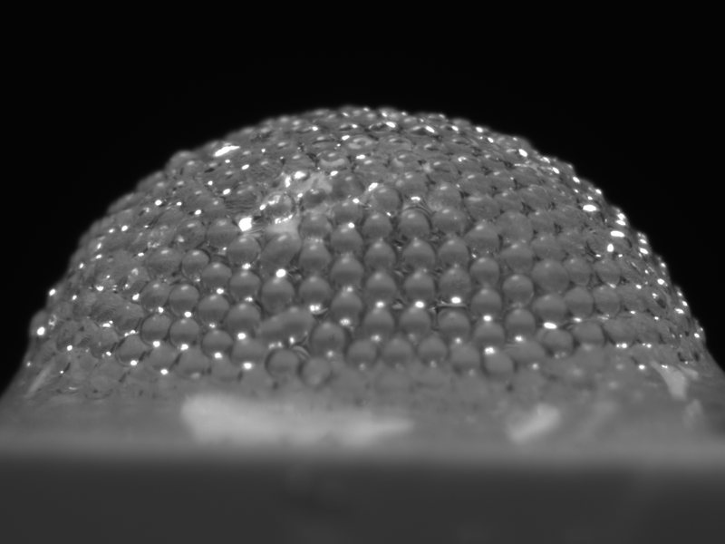
2021 · Laboratoire Navier, École des Ponts
Conception et montage du banc ; caméra rapide au-delà de 1000 images/s, traitement d'images et du signal en Python. Rapport →
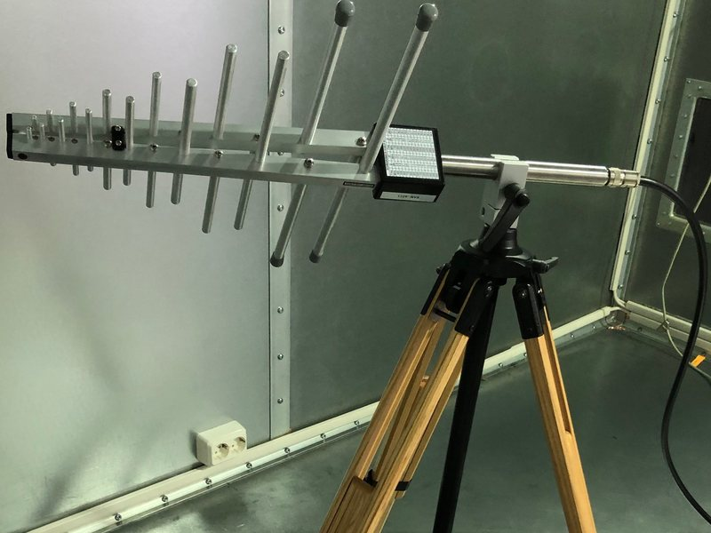
2020–2021 · ESYCOM, Université Gustave Eiffel
Acquisition automatisée à l'analyseur de réseau vectoriel, brassage de modes, traitement sous MATLAB. Rapport (en) →
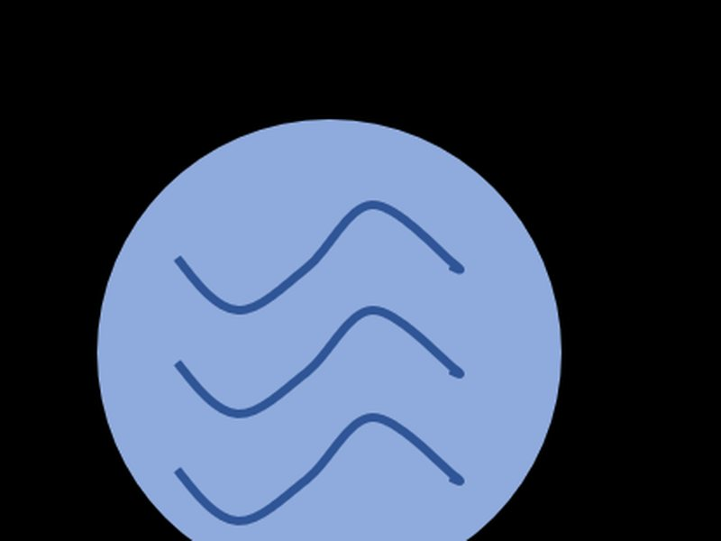
2021 · ENS, appel à projets vols paraboliques CNES
Proposition d'équipe pour une expérience en micropesanteur, présélectionnée par le CNES. Proposition (en) →
2021–2022 · École Normale Supérieure
Construction et étalonnage d'un microscope à force atomique à partir de composants simples ; mesure de la vitesse de la lumière par temps de vol, le principe des LIDAR de robots.
05 — Parcours
06 — Centres d'intérêt
Les attractions sont des machines que j'adore : plateformes de mouvement, systèmes de lancement, animatroniques, contrôle de spectacle et toute la logique de sécurité derrière. J'ai été opérateur d'attractions à Disneyland Paris, et travailler sur ces systèmes — chez Disney ou ailleurs — est mon objectif à long terme.
Je suis de près l'apprentissage automatique et j'utilise des outils d'IA tous les jours dans mon travail. Ce qui m'intéresse surtout, c'est ce qu'elle peut apporter aux essais : détecter dérives et anomalies dans les mesures, séquences de test plus intelligentes, maintenance prédictive.
Les marchés financiers sont un autre système que j'aime comprendre : données, modèles et risque. J'apprécie le côté quantitatif : confronter un modèle aux données réelles et voir où il tient et où il casse.
Disponible début 2027, ouvert au Maroc, au Golfe et aux États-Unis (nationalité française, éligible au V.I.E.).